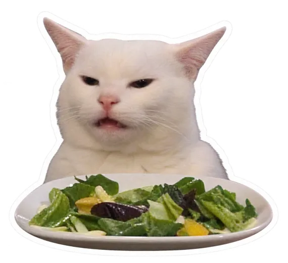

~/spicy-lab$ cat README
Small builds,
served spicy.
Interaction experiments, side quests and things I made just because I could. Code open for the taking.
$ ls -l experiments/
01
page-not-found/sticker-takeoverThe copy rolls in, then kittens take over the whole screen.
motion
nov 2026
more cooking